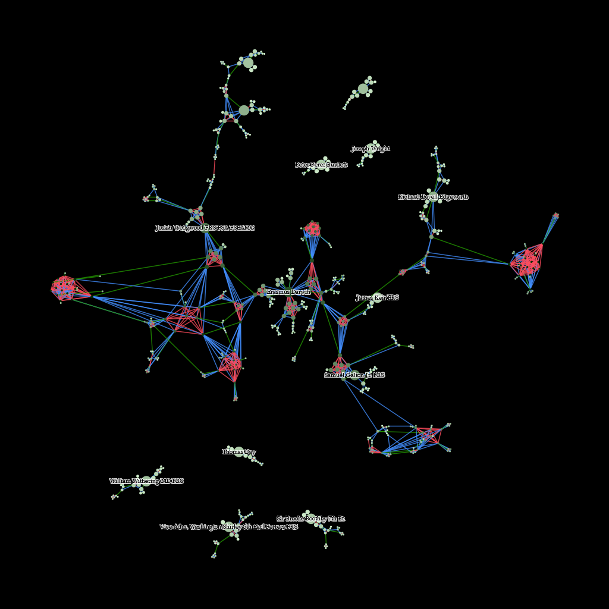
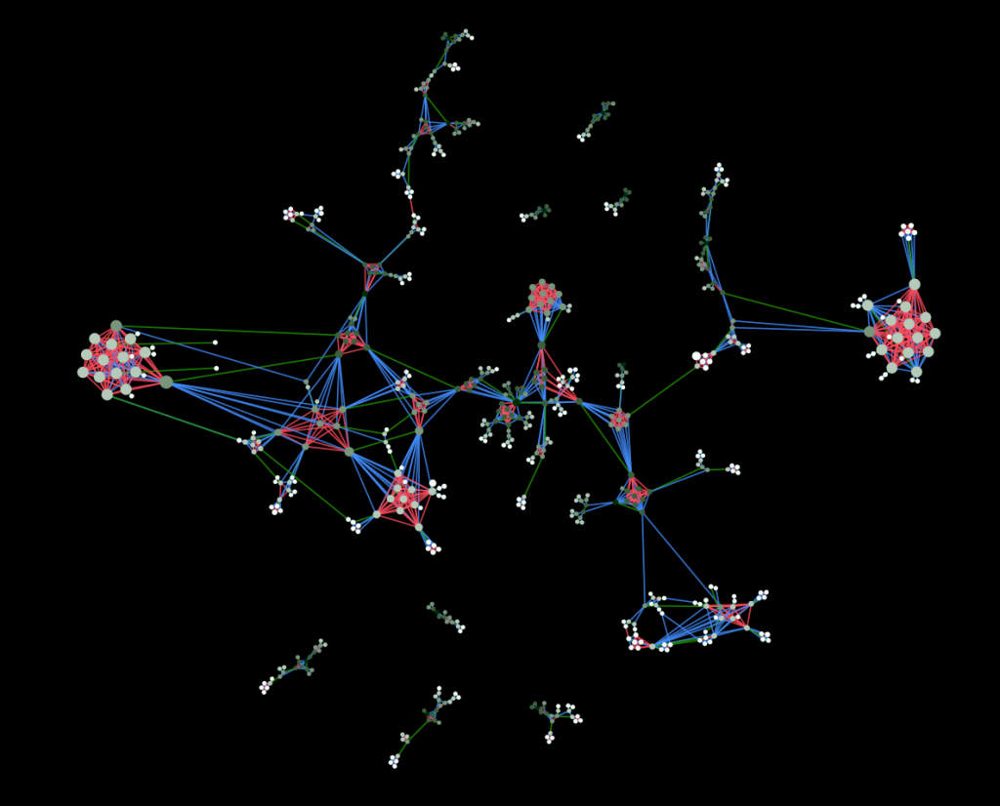
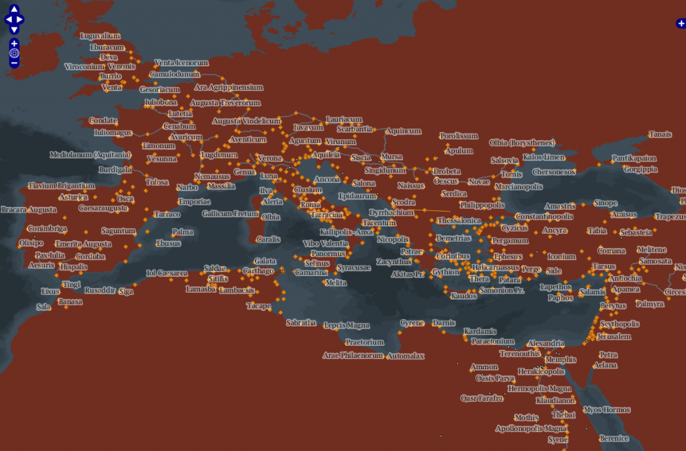
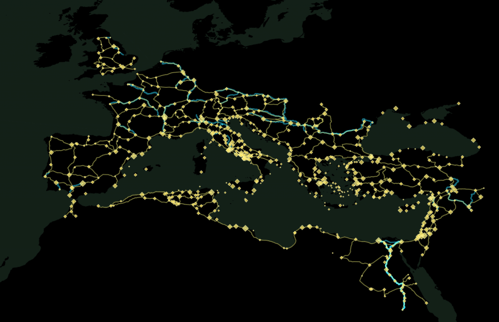

With March having arrived, it’s time for me to pivot away from Imperial Roman networks and toward new projects. This means stepping away from purely geographic networks and back into more abstract networks, specifically the networks made of genealogical connections. Just working with these networks a bit, and providing some support for social network analysis and representation being done in the Spatial History Project, has reminded me of how daunting network visualizations can be. Here’s a small set of family connections around twelve members of the Lunar Society:




But it is my growing suspicion that we hold network visualizations to higher standards than we do to an equally abstract and complex class of knowledge representation: the traditional map. Despite the need for increased spatial literacy, it’s easy to see that there is a basic literacy in geographic visualization of information that should be expected in network visualizations. For instance, there is more information on display in the below than the two images above.

And yet, without my even mentioning what is on display, a typical scholarly or lay observer would already have a grasp of the subject matter. This despite the likelihood that the observer is neither a geographer nor an astronaut, and so has little experience with literally seeing Europe from space or creating and analyzing spatial data. This basic literacy required to understand the representation of knowledge is contrasted with the fluency necessary to create such objects in the hope that we can develop a similar divide in the realm of network representations, which I think will only grow in popularity and ubiquity in the coming years.
Maps do not work because they’re somehow more rooted in a “real” physical geography. A much more abstract version of the above map will likely provide the same observer with a strong basis for understanding the information being presented

While it’s harder to see the patterns that indicate the Mediterranean and European coastlines, and it’s overlaid with a set of abstract connections between points, even an abstract representation of geographic data, such as this one, does not cause the consternation that I have seen result from even a simple representation of a network.
Here I have to pause and point out to my colleagues who deal with spatial phenomena that I know that networks are spatial, and that spatial data is not only limited to the geography of the Earth, and that spatial analysis is used to analyze all manner of things, including networks and (I’m not kidding) diapers. But that’s an argument between to fluent speakers about semantics, and I’m directing this at a larger audience that should not be concerned with fluency but with literacy. For them, the networks I showed above are different than the maps I’m referring to now.
Even though these maps are networks (as I’ve so often referred to the Roman transportation network) and most of the maps that people are familiar with actually display network data. But maps have a few basic standards in display of information that network analysis might stand to adopt. Some concept of representation of space (and even, to a degree, projection) as well as very simple standards like displaying water traditionally with one class of colors, and roads with another class, and so on, so that we develop a general sense of standard symbols for standard features.
For instance, even when I chose to represent the ocean with a gray palette, I still followed general principles for representing land and rivers below:


